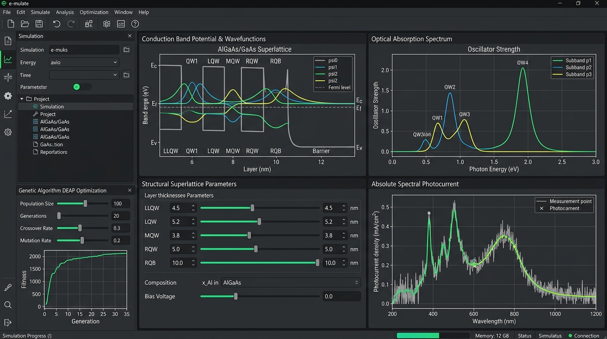

e-mulate is an integrated computational physics and machine-assisted engineering platform designed to model, simulate, and inversely design quantum semiconductor heterostructures—primarily coupled quantum wells and defect-engineered finite superlattices.
Developed at the Semiconductor Laboratory (LabSem) of PUC-Rio and UFRJ, the platform addresses the demanding solid-state physics of mid- and far-infrared optoelectronic devices, including Quantum Well Infrared Photodetectors (QWIPs), Quantum Cascade Detectors (QCDs), Quantum Cascade Lasers (QCLs), and intermediate-band quantum photovoltaics.
The system couples rigorous 1D quantum mechanics numerical solvers (4th-order Numerov boundary-value algorithm and Transfer Matrix Method - TMM) with an ultra-fast compiled Fortran 90 core. Furthermore, it incorporates bio-inspired multi-objective Genetic Algorithms (DEAP) to explore vast structural parameter spaces and autonomously synthesize optimal layer sequences matching targeted optical absorption windows.
Native compiled Fortran 90 binary (photocurrent_sim_windows.exe) calculates complete superlattices, wavefunctions, dipole oscillator strengths, and absolute photocurrent spectra in ~3 to 5 seconds per sample.
Multi-objective Genetic Algorithm (GA) powered by DEAP optimizes up to 7 structural parameters simultaneously, synthesizing structures for maximal photocurrent or targeted transition resonances (e.g., $300.0 \pm 20.0\,\text{meV}$).
Automated parameter exploration module supporting independent Fixed or Variable stepping per dimension, prior runtime estimation, multi-core CPU parallelization, and safe background thread cancellation.
216+ precomputed simulations cataloged with JSON persistent disk caching (<50 ms loading time), multi-criteria column dropdown filters, and bi-directional interactive scatter cross-filtering.
Conduction band electron confinement along epitaxial growth axis $z$ is modeled with a position-dependent electron effective mass $m^*(z)$ and conduction band edge potential step profile $V(z)$:
Where $m^*(z) = 0.067\,m_0$ in binary GaAs and $m^*(z) = (0.067 + 0.083x)\,m_0$ in ternary $\text{Al}_x\text{Ga}_{1-x}\text{As}$, with conduction band offset $\Delta E_c$ parameterized according to empirical alloy composition $x$.
Ensures strict continuity of probability density and quantum probability flux across abrupt semiconductor interfaces at $z = z_0$:
To calculate bound state eigenenergies $E_n$ and normalized envelope wavefunctions $\psi_n(z)$, the 1D Schrödinger boundary-value equation is transformed into Numerov's recurrence relation with local truncation error $\mathcal{O}(h^6)$:
For unbound continuum states and electric-field-assisted tunneling resonance lifetimes across multi-barrier structures, each epitaxial layer is represented by a $2 \times 2$ transfer matrix:
Under transverse magnetic (TM) infrared optical polarization, the electric dipole transition coupling between ground state $\psi_i$ and excited subband $\psi_f$ is quantified by the dimensionless oscillator strength:
Unlike traditional codes that output arbitrary normalized units, e-mulate evaluates true absolute spectral photocurrent in Amperes (A) by integrating the incident photon flux $\Phi_0$, absorption cross-section $\alpha_{if}(h\nu)$, and field-assisted tunneling escape probability $p_{\text{tunnel}}$:
The finite defect-engineered heterostructure is parameterized by 7 geometric degrees of freedom defining the central defect well and the flanking injection and collector superlattice blocks:
| Parameter | Full Name | Unit | Typical Range | Physical Role |
|---|---|---|---|---|
| LLQW | Left Lateral QWs Count | Integer | 1 – 10 | Number of periodic wells in the left injection block |
| LQW | Left Quantum Well Width | nm | 1.0 – 5.0 nm | Thickness of each well in the left periodic block |
| LQB | Left Quantum Barrier Width | nm | 3.0 – 10.0 nm | Thickness of each barrier in the left block |
| MQW | Main Quantum Well (Defect) | nm | 2.0 – 6.0 nm | Defect well hosting the localized optical ground state |
| RLQW | Right Lateral QWs Count | Integer | 1 – 5 | Number of periodic wells in the right collector block |
| RQW | Right Quantum Well Width | nm | 1.0 – 5.0 nm | Thickness of each well in the right periodic block |
| RQB | Right Quantum Barrier Width | nm | 3.0 – 10.0 nm | Thickness of each barrier in the right block |
MQW ≥ max(LQW, RQW) + 0.5 nm — The defect central well must be substantially wider than adjacent periodic superlattice wells. This ensures that the electronic ground state resides strictly below the superlattice miniband edge, localizing carrier population for selective optical infrared absorption.
e-mulate employs a high-throughput four-tier modular architecture designed to decouple user interaction, compiled high-performance physics calculation, persistent caching, and interactive multi-panel visualization:
Responsive dark Qt GUI with resizable dock panels, live parameter sliders, real-time logging terminal, and three execution dispatchers:
Instant manual evaluation of any 7-parameter superlattice structure with dynamic plot refresh.
Bio-inspired evolutionary search across 3, 5, or 7 degrees of freedom with smooth penalty windows.
Combinatorial exploration with prior runtime estimation and asynchronous multi-core dispatch.
Direct native subprocess invocation (photocurrent_sim_windows.exe) avoiding CMD quoting overhead and executing in ~3.8 seconds:
Bound-state wavefunctions $\psi_n(z)$ and eigenenergies $E_n$ solved with $\mathcal{O}(h^6)$ truncation error.
Continuum states, transmission coefficient $T(E)$, and field-assisted tunneling lifetimes.
Dipole matrix elements $f_{if}$ and absolute spectral photocurrent integration in Amperes.
Automatic parsing of Potencial_SL.txt, wavefunction_SL.txt, OscStr_SL.txt, and Photocurrent_SL.txt.
samples_cache.json loads and catalogs 216+ complete precomputed simulations in < 50 ms.
Column sorting (A-Z/Z-A), numeric comparison (>, <, ==, range), and checkbox values with instant filtering.
Superposition of conduction band $V(z)$, bound energies $E_n$, and wavefunctions $|\psi_n(z)|^2$.
Intersubband optical dipole coupling $f_{if}$ plotted against photon transition energy (meV).
Continuous photocurrent curve $I_{PC}$ in true physical units of Amperes (A) across infrared wavelengths.
Bi-directional sync: clicking any scatter point highlights the database row and refreshes physical plots instantly.
Reference defect-engineered superlattice structure evaluated from the precomputed database:
05x02.0_07.0__02.5__01x02.0_07.0 (LLQW=5, LQW=2.0 nm, LQB=7.0 nm, MQW=2.5 nm, RLQW=1, RQW=2.0 nm, RQB=7.0 nm):
All scientific peer-reviewed papers, academic theses, conference proceedings, and foundational textbooks directly related to the development and physical theoretical models of e-mulate:
LabSem – Semiconductor Laboratory
Department of Physics, PUC-Rio
UFRJ – Federal University of Rio de Janeiro